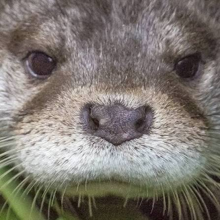

Luis Portero
Estudiant de Desenvolupament d'Aplicacions Multiplataforma
Sóc estudiant d'informàtica i estic interessat en el desenvolupament d'aplicacions, la programació i les noves tecnologies.
Mis mejores habilidades
- Programació
- Desenvolupament web
- Bases de dades
- Sistemes operatius
Objetivos profesionales
- Acabar el ciclo formativo
- Realizar prácticas en una empresa
- Treballar com a desenvolupador de software